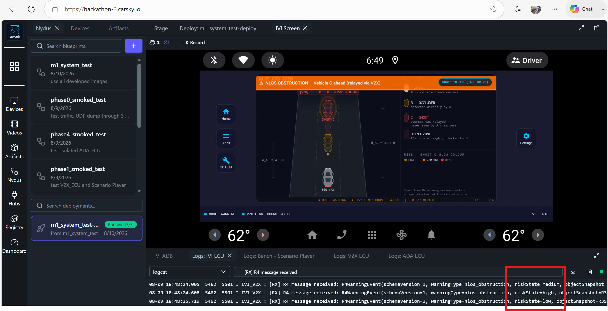

the hazard it removes, and the experience the driver gets
the checklist of everything included in the package
the evidence and the measurements behind the guarantee
precisely what Milestone 1 covers, stated openly
the customers we serve, as a whole package or per application
The accident nobody sees coming: a vehicle braking two cars ahead is invisible to the following driver — and to every sensor on their car — until it is too late.
One glance tells the driver everything: a bird's-eye view of the road ahead, the hidden vehicle drawn in, and the risk level in colour.

Checked items are complete and included in the Milestone 1 package; ❌ marks an item not yet tested.
| Delivered | Item | What you receive |
|---|---|---|
| ✅ | Application code | Three ECU applications — V2X-ECU, ADA-ECU, IVI-ECU — full source on GitHub |
| ✅ | Utility tools | Automation for app installation and log collection — tools/apk-uploader/, tools/logs-collector/ |
| ❌ | Data-provenance tools | Inside the ADA-ECU application — verify that the warning derives from the V2X relay alone (implemented, not yet tested) |
| ✅ | Isolated test images | Each ECU has mock images of its neighbours — every application testable on its own |
| ✅ | CI tools | Six CI pipelines, one per development phase, under .github/workflows/ |
| ✅ | Demo video | A video demo of the full system test |
| ✅ | Wiki | The complete project design, and the research articles founding the project |
| ✅ | Deployment blueprints | CarSky blueprints ready to be deployed and tested |
| ✅ | Documentation | Wiki pages and presentations — the wiki is a work in progress, with articles being added |
No single view can hide a gap: the demonstration is proven at three independent layers, and all three agree.
| Layer | What it proves to you |
|---|---|
| Warning screen | The driver actually saw the warning — captured as screenshots and recordings on the platform |
| Internal logs | Every processing step happened: transmission, decoding, fusion, risk assessment, reception |
| Network captures | The messages really crossed the network, byte-exact against the designed call flow — opened in standard Wireshark |
Core evidence is published in the System Delivery deck; the corresponding wiki page will follow.
Numbers read from the recorded system test, not estimates.
| Measure | Result |
|---|---|
| Hazard data received → warning on the driver's screen | 101 ms |
| Message decode and forward inside the V2X application | under 1 ms |
| Continuous operation | The demo scenario repeats every ~10 s for as long as the system runs |
| Direct detections of the hidden vehicle by the warned vehicle | Zero in the recorded run's logs — checked by the data-provenance tool (see note) |
What you receive today, stated precisely — the demonstration runs entirely on the CarSky cloud platform.
The boundary is written down — no surprise gaps, and a registered path forward.
Known limits of Milestone 1, each with its registered follow-up.
| Limitation | Today | Future feature |
|---|---|---|
| Warning threshold | Fixed — derived from the stopping distance at over 75 km/h | Speed-scaled thresholds |
| Scenario coverage | Same-lane occlusion only | Occluded cars in other lanes and around corners |
| Warning screen | 2D God View | True 3D warning screen |
| Perception input | Machine learning on a stored, looped video | Live camera feed |
Two ways to receive the product — both fully supported by what is in the package today.
| Model | What it is | What makes it safe to buy |
|---|---|---|
| Whole package | The three ECU applications as one integrated system | Delivered already system-tested end to end, with the recorded demonstration and its evidence |
| Single application | Any one ECU application on its own | Each application ships with mock images of its neighbours, so it is testable and acceptable standalone |
| Stakeholder Group | Who Benefits (Lợi Ích) | Who Incurs Costs (Chi Phí) | Net Impact |
|---|---|---|---|
| 1. Drivers & Passengers | 81% Crash Reduction, early alert 1.9ms before crash | Minor cost (~$30/car) | ++++ Net Positive |
| 2. Automotive OEMs | Euro NCAP 5-Star, 95% sensor BOM savings ($100 vs $3.5k) | $30/car software license | ++++ Net Positive |
| 3. Commercial Fleets | $4.8M 5-Yr Savings, prevents convoy crashes | $10/car/mo SaaS fee | ++++ Net Positive (7.38x BCR) |
| 4. Auto Insurers | Massive Drop in Claim Frequency | 15% premium discount | +++ Net Positive |
| 5. Government & Society | Vision Zero Safety, smart city ready | 5.9GHz public spectrum | ++++ Net Positive |
Team KIS · Cooperative Vehicle Awareness · FPT Hackathon 2026